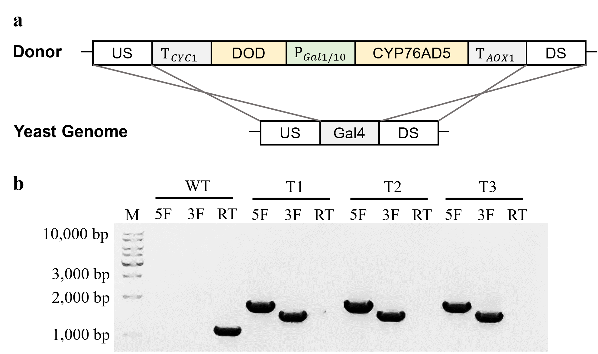
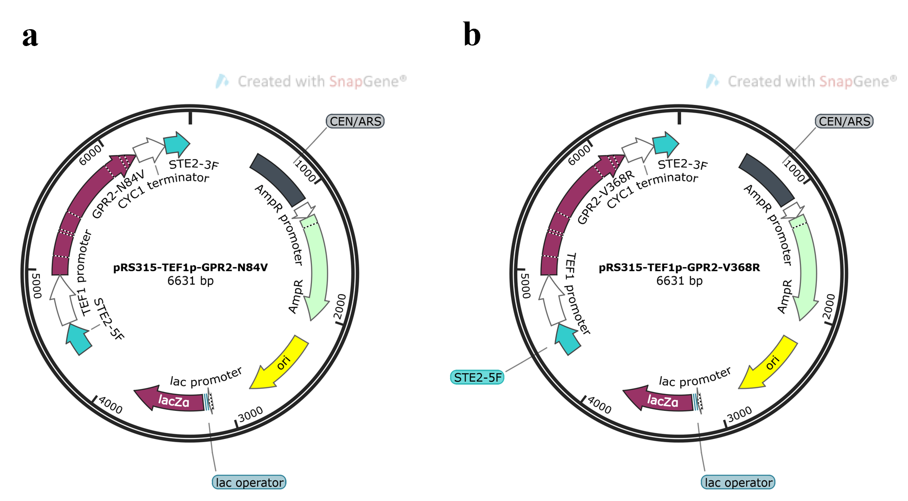
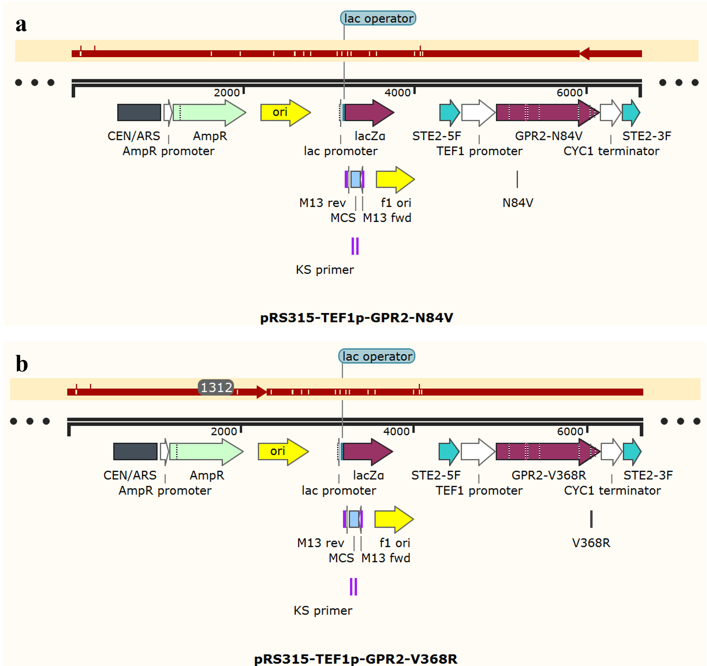
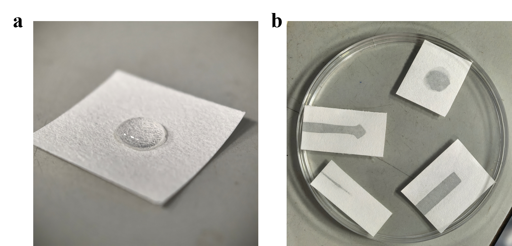
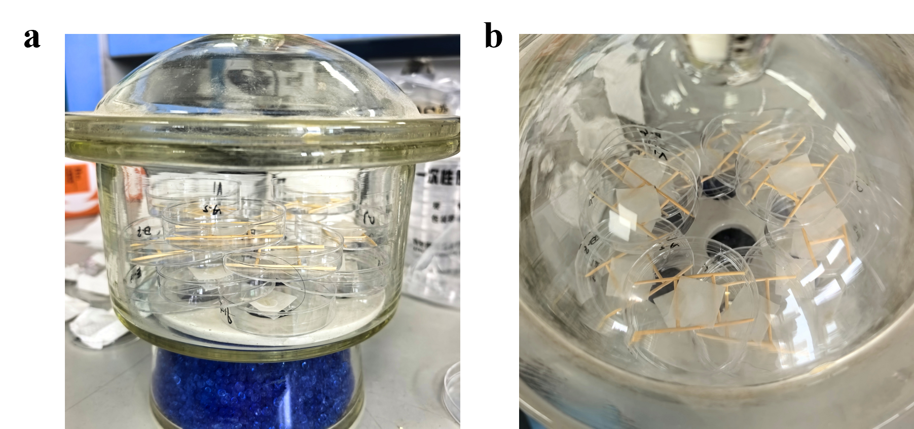
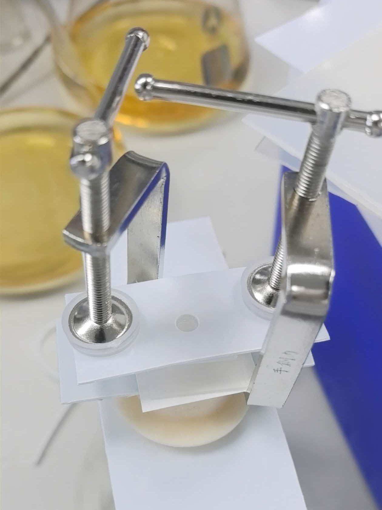
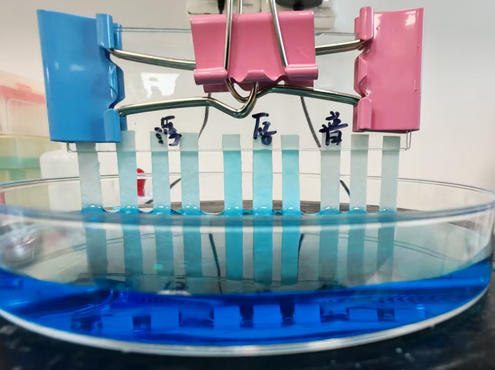

DBTL-1: Heterologous Expression and Transmembrane Localization Verification of GPR2
In this cycle, we performed heterologous expression and transmembrane localization verification of GPR2. The construction strategy of verification strains and detection methods were iteratively optimized. The final results met our expectations, laying a foundation for the next DBTL cycle.
Data status
The wet-lab team has reported that the culture medium in part of the fluorescence experiments was prepared incorrectly, and those experiments are being repeated. Until the team confirms which fluorescence results are affected, the GPR2-sfGFP localization results in this section (fluorescence microscopy, CFW and FM4-64 staining) and the conclusion drawn from them are provisional.
The First Cycle
Design
Based on the dry-lab screening results, we selected GPR2 as the receptor for display. To confirm that GPR2 can be heterologously expressed and correctly localized to the plasma membrane in our desired strain CEN.PK2-1C, we devised an experimental workflow consisting of "construction of the GPR2-sfGFP heterologous-expression plasmid — gene knock-in via yeast endogenous homologous recombination (HR) — assessment of expression and localization using fluorescence microscopy".
For plasmid construction (Figure 1.a), our design rationale was as follows:
a. The upstream and downstream sequences of the STE2 CDS were utilized as the 5′‑homology arm and 3′‑homology arm to facilitate gene knock‑in via yeast endogenous homologous recombination (HR).
b. The constitutive TEF1 promoter was employed to drive gene expression. The cDNA sequence of GPR2 was fused to the sfGFP sequence via a flexible linker for observation under fluorescence microscopy, followed by the CYC1 terminator.
c. The Leu2 auxotrophic marker was used for transformant selection.
Build
Firstly, the GPR2‑sfGFP heterologous expression plasmid was successfully assembled by one‑step cloning (Figure 1). The plasmid was then linearized and transformed into yeast. Positive transformants were validated to yield yeast strains carrying correctly knock‑in GPR2‑sfGFP (Figure 2).


Test
Upon examining GPR2-sfGFP-transformed yeast cells by fluorescence microscopy, we detected intense green fluorescent signals (Figure 3).

Learn
While Figure 3 indicates that GPR2 is heterologously expressed and appears to localize to the plasma membrane, definitive evidence for authentic plasma-membrane localization remains absent. We therefore moved on to the next DBTL cycle.
The Second Cycle
Design and Build
To further confirm that GPR2 correctly localizes to the plasma membrane, we designed two sets of experiments:
a. Staining of the yeast cell wall with the cell-wall dye Calcofluor‑White (CFW);
b. Staining of the yeast plasma membrane with the plasma-membrane dye FM4-64.
Test
With cell-wall staining, we found that the fluorescence signal of GPR2-sfGFP barely overlapped with the CFW signal and resided on the inner side of the cell wall (Figure 4).

When performing plasma-membrane staining, we unintentionally gave FM4-64-exposed yeast an extra 30 min of incubation. GPR2-sfGFP was found to co-localize with the membrane dye at the plasma membrane and vacuole (Figure 5). Since FM4-64 is known to trigger endocytosis[1], this result suggests that plasma-membrane-localized GPR2-sfGFP was internalized along with FM4-64, further supporting correct plasma-membrane targeting of GPR2. We also added fluorescence-microscopy results from yeast under regular incubation conditions (Figure 5), matching our expectations.

Learn
Taken together, these results confirm that CEN.PK2-1C can achieve heterologous expression and proper plasma-membrane localization of GPR2, which is an essential prerequisite for chassis-strain construction based on this host.
Reference
Vida TA, Emr SD. A new vital stain for visualizing vacuolar membrane dynamics and endocytosis in yeast. J Cell Biol. 1995 Mar;128(5):779-92. doi: 10.1083/jcb.128.5.779. PMID: 7533169; PMCID: PMC2120394.
DBTL-2: Engineering Construction of Ascaroside-Responsive Yeast Chassis
Building on the results of the previous cycle, we officially carried out the engineering construction of an ascaroside-responsive yeast chassis in this cycle. The strains constructed in this phase can be directly applied to product packaging and hardware development in the next research cycle.
The First Cycle
Design
Based on the results of DBTL-1 and literature references [1][2], we performed chassis modification on the CEN.PK2-1C strain. Firstly, we designed the knockout of the response-interfering gene Gal80 (Figure 2.a) to relieve the repression of Gal gene expression by Gal80. We knocked out the Gal80 gene via yeast homologous recombination (HR). Approximately 1 kb sequences flanking the upstream and downstream regions of the Gal80 coding sequence were used as homologous arms for the knockout cassette, and Trp was adopted as the auxotrophic marker for transformant screening.
Build
Firstly, we amplified the upstream and downstream homologous arms (5F is 1255 bp and 3F is 1406 bp.) of Gal80 from the genomic DNA of CEN.PK2-1C strain and the Trp auxotrophic marker element (1081bp) from the pRS314 plasmid. The Gal80 knockout cassette was successfully assembled via Double-joint PCR (Figure 1).

Test
Subsequently, we transformed the cassette into yeast cells. After genomic DNA extraction and transformant verification, yeast strains with successful Gal80 knockout were obtained (Figure 2).

Learn
The response-interfering gene was knocked out in this round. According to the order of the signal transduction pathway, we next need to construct the synthetic transcription factor sTF, and therefore we proceed to the next cycle.
The Second Cycle
To efficiently construct the yeast chassis strain, this cycle was performed concurrently with the third cycle.
Design
To construct the sTF, we designed an experimental workflow including STE12 gene knockout, recombinant pRS315-sTF plasmid construction, sTF gene knock-in via yeast homologous recombination (HR), and transformant verification.
Details are as follows:
a. Sequences of approximately 1 kb upstream and downstream of the STE12 gene were selected as the homologous arms of the knockout cassette, and His was used as the auxotrophic marker for subsequent transformant screening and validation (Figure 5.a).
b. The upstream and downstream sequences of the STE12 gene were used as the 5′ homologous arm (identical to the 5′ homologous arm of KOSTE12) and 3′ homologous arm, respectively. Between the two homologous arms, the synthetic transcription factor sTF fused by Gal4-DBD and STE12-PRD [1], together with the Leu auxotrophic marker, was inserted to generate the homologous recombination plasmid pRS315-sTF (Figure 1).

Build
Firstly, we amplified the upstream and downstream homologous arms of STE12 from the genomic DNA of strain CEN.PK2-1C (5F: 1082 bp, 3F: 1031 bp). Meanwhile, the His auxotrophic marker (1061 bp) was amplified from plasmid pRS313. The STE12 knockout cassette was successfully assembled via Double-joint PCR (Figure 2).

Meanwhile, we designed and constructed the homologous recombination plasmid pRS315-sTF. However, after fragment amplification, one-step cloning, colony PCR and plasmid extraction, the double digestion result did not meet our expectation (Figure 3).

Plasmid sequencing revealed that the KOSTE12-3F fragment failed to assemble (Figure 4.a). We suspected that lab power outage during the experiment impaired the activity of the one-step cloning enzyme and the competence of E. coli competent cells. Therefore, we re-performed the experiment based on the previously constructed plasmid and obtained correct digestion and sequencing results (Figure 4).

Test
Next, we first attempted to knock out the STE12 gene. Despite three repeated trials, we failed to obtain positive results, and all transformants indicated unsuccessful knockout (Figure 5). Combined with identical issues encountered in the constitutive pigment expression verification of Cycle 3, we decided to redesign our experimental strategy.

Learn
After literature review, we hypothesized that the failure of gene knockout stemmed from the low efficiency of homologous recombination (HR), which was unsuitable for multiple rounds of genetic modification. Therefore, we adopted the CRISPR-Cas9 system[3][4] for gene editing. Together with Cycle 3, we advanced into Cycle 4.
The Third Cycle
This cycle was actually carried out in parallel with Cycle 2. The Learn section is largely consistent with that of Cycle 2 and will not be elaborated here.
Design
After constructing the strain carrying sTF, the next step was to introduce genes encoding inducibly expressed betaxanthin synthases. Since these two genes originate from plants, we designed a verification experiment to confirm that the two enzymes could be expressed in yeast and catalyze betaxanthin production. Accordingly, we constructed the homologous recombination plasmid pRS315-MjDOD-BvCYP76AD5 with a design similar to pRS315-sTF (Figure 1.a) and transformed it into yeast (Figure 2.a) to observe color development.
Build
After successfully amplifying the required fragments via PCR, we encountered a problem that plagued us for nearly one month: 11 attempts of plasmid construction using one-step cloning all failed. We faced a variety of issues, including no colony growth after transformation, fully negative bands in colony PCR, incorrect plasmid double digestion results, and erroneous sequencing data. Each time one problem was solved, another emerged, severely delaying our experimental progress.
Nevertheless, our team did not give up. Together with our instructors, we analyzed potential causes and proposed multiple solutions (see Contribution-Experimental Methods and Practical Experience for details). Finally, we obtained correct results after replacing with fresh one-step cloning enzyme (Figure 1).

Test
Subsequently, we linearized plasmid pRS315-MjDOD-BvCYP76AD5 and transformed it into yeast. Similar to the results from Cycle 2, we failed to achieve correct knock-in of the betaxanthin synthase genes for constitutive expression (Figure 2). However, we observed obvious yellow color in the transformed yeast (Figure 3). We hypothesized that the plasmid underwent self-circularization and existed episomally inside yeast cells.


This result further demonstrated that homologous recombination (HR) had low efficiency and was not suitable for multiple rounds of genetic modification. Therefore, this cycle, together with Cycle 2, proceeded to Cycle 4.
The Fourth Cycle
Based on previous results, we adopted CRISPR-Cas9 for gene editing. The existing Cas9-carrying plasmid (p414-TEF1p-Cas9-CYC1t) uses Trp as its auxotrophic marker, which overlaps with the marker applied in our initial Gal80 knockout. Therefore, we first replaced the auxotrophic marker of this plasmid with Leu (Figure 1). In addition, according to available references, we also needed to construct plasmids expressing specific sgRNAs (Figure 3) and corresponding donor DNA[3] (Figure 7, Figure 8). Thus, we formally started this cycle.

Design
We needed to construct three types of components: the Cas9 plasmid with replaced auxotrophic marker, plasmids expressing specific sgRNAs, and donor DNA. Consistent with our previous strategy, we assembled the required plasmids via one-step cloning. Notably, we initially intended to use Quick-Change PCR for sgRNA plasmid construction. However, we encountered great difficulty in whole-plasmid amplification during practical operation. Consequently, we still adopted one-step cloning to build this plasmid.
Build
First, we constructed the Cas9 plasmid with replaced auxotrophic marker (Figure 1), and the construction was highly successful (Figure 2).

Next, we constructed sgRNA plasmids targeting three genes: STE12, Gal4 and STE2 (Figure 3).

Although Quick-Change PCR failed to yield satisfactory results, our team successfully obtained three correct plasmids after switching to one-step cloning (shown in the figure below).


Finally, we constructed the corresponding donor DNA. The sTF fragment was amplified from plasmid pRS315sTF (https://registry.igem.org/parts/bba26iotmof). The gene fragment of betaxanthin synthase induced by the bidirectional Gal1/10 promoter (https://registry.igem.org/parts/bba2697laqw) was first amplified from plasmid pRS315MjDODBvCYP76AD5, followed by DoubleJoint PCR amplification, using the same method as our previous fragment construction (Figure 7).

For GPR2, since GPR2 in the previously constructed plasmid pRS315-TEF1p-GPR2-sfGFP is fused to sfGFP via a flexible linker, direct construction of the donor fragment was complicated. We therefore continued to use one-step cloning to assemble the plasmid (Figure 8), and finally successfully obtained pRS315-TEF1p-GPR2 for GPR2 knock-in (Figure 9).


Test
With these components ready, we proceeded to yeast transformation.
First, according to references[3], we needed to construct yeast strains that constitutively express Cas9 protein. Therefore, we directly transformed plasmid p414-Cas9-Leu and obtained correct transformants (Figure 10.a), which were then prepared into competent cells.

Next, we co-transformed plasmid p426-SNR52p-gSTE12-SUP4t together with the sTF expression cassette (Figure 11). Gal4DBD was successfully recombined into the correct locus (Figure 10.b).

Subsequently, we co-transformed the p426-SNR52p-gGal4-SUP4t plasmid together with the Gal1/10bp-Betaxanthin Expression Cassette. The Gal4 gene was successfully knocked out, and the betaxanthin synthase gene under the control of the Gal1/10 bidirectional promoter was simultaneously knocked in (Figure 12).

Finally, we co-transformed the p426-SNR52p-gSTE2-SUP4t plasmid and linearized pRS315-TEF1p-GPR2 plasmid. The GPR2 gene was successfully recombined into the STE2 locus.
Learn
So far, the chassis engineered yeast strain of our project has been constructed. Meanwhile, the dry lab finished the modification of GPR2 mutants. We therefore moved to the next cycle to characterize the screened GPR2 mutants.
The Fifth Cycle
Design
Based on the results from previous cycles and dry lab, we still used one-step cloning to construct plasmids for transformation (Figure 1). Strain NKU-Y06 (Wet Lab — Experiments — Strain Construction) was utilized for genetic modification.

Build and Test
We successfully constructed two plasmids, pRS315-TEF1p-GPR2-N84V and pRS315-TEF1p-GPR2-V368R, via one-step cloning. Sequencing verified that their sequences were correct (Figure 2).

Subsequently, we mixed the p426-SNR52p-gSTE2-SUP4t plasmid with each of the two plasmids mentioned above and co-transformed them into strain NKU-Y06. The recombination locus was identical to that used for GPR2 knock-in. After transformant validation, we successfully obtained two strains carrying GPR2 mutants.
Learn
This cycle is hereby concluded. The strains constructed in this cycle can only function under laboratory conditions. For field applications, product formulation and packaging of the strains are required. Therefore, we proceeded to the third major DBTL cycle.
References
Fan C, Yuan J. Reshaping the yeast galactose regulon via GPCR signaling cascade. Cell Rep Methods. 2023 Dec 18;3(12):100647. doi: 10.1016/j.crmeth.2023.100647. Epub 2023 Nov 20. PMID: 37989311; PMCID: PMC10753199.
Cong Fan, Nike He, Jifeng Yuan, Cascaded amplifying circuit enables sensitive detection of fungal pathogens, Biosensors and Bioelectronics, Volume 250, 2024, 116058, ISSN 0956-5663, https://doi.org/10.1016/j.bios.2024.116058.
James E. DiCarlo, Julie E. Norville, Prashant Mali, Xavier Rios, John Aach, George M. Church, Genome engineering in Saccharomyces cerevisiae using CRISPR-Cas systems, Nucleic Acids Research, Volume 41, Issue 7, 1 April 2013, Pages 4336–4343, https://doi.org/10.1093/nar/gkt135，
Mans R, Wijsman M, Daran-Lapujade P, Daran JM. A protocol for introduction of multiple genetic modifications in Saccharomyces cerevisiae using CRISPR/Cas9. FEMS Yeast Res. 2018 Nov 1;18(7):foy063. doi: 10.1093/femsyr/foy063. PMID: 29860374; PMCID: PMC6074844.
DBTL-3: Test Strip Development and Productization
Building upon the engineered chassis strain constructed in previous DBTL cycles, we turned to another key project objective: developing an affordable, convenient, and user-friendly colorimetric detection platform. To achieve this, we executed subsequent engineering cycles focused on cell immobilization and test-strip productization. This section details two overarching DBTL cycles—test-strip formulation using engineered yeast and on-strip colorimetric development—each encompassing several sub-iterative cycles that drive continuous optimization.
The First Cycle: Test-Strip Formulation & Processing
To create an accessible, rapid, and low-cost live-cell test strip, we developed a standardized, transferable workflow for yeast cell immobilization and freeze-drying. This major cycle comprises three sub-iterative DBTL cycles: Substrate Selection, Surface Modification & Spotting Optimization, and Elution Method Refinement.
Sub-cycle 1: Substrate Selection
Design
An ideal test-strip substrate must exhibit high cell-loading capacity, excellent mechanical stability, batch-to-batch reproducibility, and high biocompatibility during both freeze-drying and reactivation. We selected four candidate substrates representing distinct physical/chemical properties: Qualitative Filter Paper, Laboratory Paper Towels, Lens Paper, and Weighing Paper.
Using a first-generation freeze-drying protectant (glucose-free YPD + sucrose), we performed a comparative evaluation via freeze-drying, cell elution, and colony counting to establish an initial benchmark.
Build & Test
Cells were suspended in the protectant, spotted onto each substrate, freeze-dried, eluted, and plated for viable colony counting. The following sections present our experimental results.
Table 1. First-Generation Freeze-Drying Plate Counts
| Substrate | Cell Survival Rate | Processability & Handling | Spotting Performance |
|---|---|---|---|
| Qualitative Filter Paper | 8% | Excellent | Moderate (liquid spreads slightly) |
| Weighing Paper | 27% | Poor | Poor (droplet beading on surface) |
| Paper Towels | 10% | Poor (non-uniform) | Moderate |
| Lens Paper | 3% | Poor (too fragile) | Poor |
Learn
Lens paper, paper towels, and weighing paper were eliminated due to mechanical frailty, poor reproducibility, or severe hydrophobic surface pooling. Qualitative filter paper was retained as a temporary baseline.
However, the qualitative filter paper exhibited lateral wicking (irregular spot boundaries and uneven cell distribution). Additionally, colony counting alone proved biased, as elution efficiency was heavily confounded by substrate adsorption capacity.Therefore, we moved on to the next cycle.
Sub-cycle 2: Surface Modification & Spotting Optimization
Design
To address lateral wicking and irregular spot boundaries, we sought to create distinct hydrophilic/hydrophobic boundaries on the substrate. Inspired by photolithography masking, we hypothesized that vapor deposition of cyanoacrylate adhesive (ergo.® 5300) using adhesive label masks could define localized, circular hydrophilic spotting zones.
To prevent cell sedimentation and uneven spatial distribution, we improved the protectant formulation by introducing sodium alginate (to increase viscosity) and replacing sucrose with trehalose, glycerol, sodium glutamate, and mannitol for matrix stabilization and osmotic protection. Furthermore, to overcome manual pipetting retention caused by high solution viscosity, we engineered a custom vacuum-assisted spotting fixture.
Build & Test
We developed three types of devices and materials. For the surface hydrophobic coating, filter paper treated with masking and glue vapor fumigation formed well-defined circular hydrophilic regions (diameter = 5 mm) surrounded by hydrophobic barriers to effectively prevent lateral liquid spreading(Figure 1).

Physical characterization of the protectant confirmed that the novel sodium alginate-based protectant formed flexible 3D protective matrices after drying without structural collapse(Figure 2).

We also fabricated a custom vacuum filtration fixture as a vacuum-assisted spotting device, which enables rapid infiltration of high-viscosity protectant suspension into the substrate and greatly improves spotting speed and volume accuracy (Figure 4).

Learn
The combination of vapor-phase hydrophobic masking and the sodium alginate-based protectant successfully confined cell loading within a uniform circular boundary. The vacuum-assisted spotting device eliminated liquid retention on pipette tips and standardized cell distribution.
While physical wicking was resolved, selecting the final optimal substrate required validating broader candidate materials under a refined, reliable elution protocol.
Sub-cycle 3: Elution Method Refinement & Final Substrate Selection
Design
To decouple cell survival rates from physical paper adsorption, we refined the evaluation protocol. We modified the eluent to an isotonic PBS buffer supplemented with 0.1% Tween 80 to reduce non-specific cell-substrate binding. Mechanical bead homogenization was introduced to standardize cell detachment.
Using this standardized elution method, we added new candidate substrates and performed rigorous comparative screening on them: Qualitative Filter Paper, Thin Glass-Fiber Paper, Thick Glass-Fiber Paper (Whatman™ GF/B), and Cellulose Acetate Paper.
Build & Test
Substrates were spotted with the optimized formulation, freeze-dried (and parallel air-dried to test stability), eluted under the new bead-homogenization protocol, and evaluated for viability, batch-to-batch consistency (Coefficient of Variation, CV), and water absorption capacity (Table 2).
Table 2. Second-Generation Freeze-Drying Performance
| Substrate | Freeze-Drying Viability | Viability CV (%) | Water Absorption Capacity | Physical Handling & Stability |
|---|---|---|---|---|
| Qualitative Filter Paper | 40% | 21.2% | Low | Moderate; prone to deformation |
| Thick Glass Fiber (GF/B) | 18% | 55.0% | Highest | Excellent; robust, no deformation |
| Thin Glass Fiber | 18% | 65.6% | Moderate | Good |
| Cellulose Acetate | 19% | 86.6% | Excluded | Poor; static-prone and brittle |
Water absorption was independently quantified using a liquid wicking assay (Figure 5).

Learn
Finally, the Whatman™ GF/B Thick Glass-Fiber Paper was selected as the final chassis substrate. Despite filter paper showing higher recovery in small-scale counts, GF/B displayed superior fluid loading capacity, absorbed viscous protectants instantaneously without surface pooling or paper warping, and offered unmatched mechanical robustness during large-scale handling.
Through these three sub-cycles, we successfully built a standardized, high-reproducibility pipeline for test-strip substrate processing, protectant formulation, and automated cell loading.